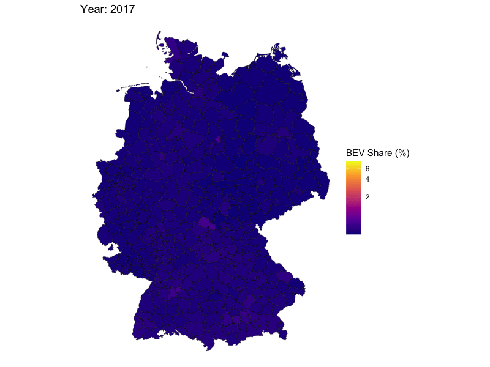
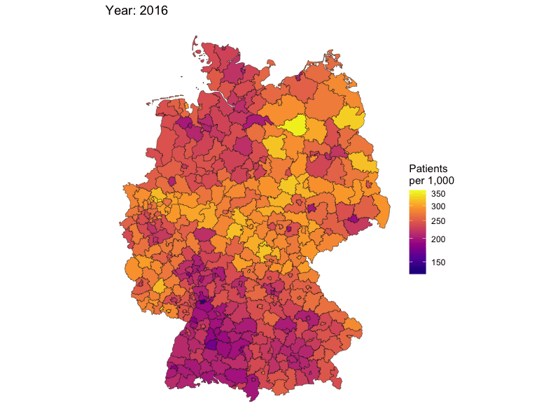
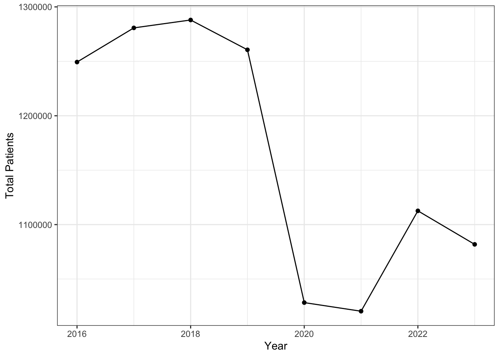

# Load necessary libraries
library(knitr)
opts_knit$set(root.dir = "../../") # Set working directory to project root
library(tidyverse) # Data manipulation and visualization
library(gganimate) # Create animated plots
library(arrow) # Read/write Parquet files
library(sf) # Spatial data handling
library(haven) # Read Stata files
library(lfe) # Linear fixed effects models
library(texreg) # Regression table formattingEVs and Health: Experiments for Germany
Introduction
This notebook contains experiments related to EVS and health research.
Data Loading
Data Preparation
# Load BEV (Battery Electric Vehicle) data from Stata file
# Select relevant columns: region code (AGS), year, growth rate, BEV share, charging infrastructure, population
bev_data <- read_dta("data/Germany/raw/BEV_health.dta", col_select = c(AGS, year, gr_by_year, BEV_share, LF_PV, pop_total))
# Clean and filter BEV data
bev_data <- bev_data %>%
filter(AGS >= 1000, AGS <= 99999) %>% # Keep only valid district codes (Kreise)
mutate(
across(c(AGS, year, pop_total), as.integer), # Convert to integer for consistency
)
# Optional: Save processed data to Parquet format for faster loading
# bev_data %>% write_parquet("data/Germany/bev_data.parquet")
## Health data
# Load health data from German Federal Statistical Office (Destatis)
# File contains hospital patient statistics by region, year, age group, and ICD-10 diagnosis
health_data_raw <- read_csv2("data/Germany/raw/23131-01-01-4.csv", skip = 7, locale = locale(encoding = "ISO-8859-1"))
# Clean and reshape health data
health_data <- health_data_raw %>%
rename(year = ...1, AGS = ...2, age = ...4) %>% # Rename unnamed columns
select(-...3) %>% # Remove unnecessary column
filter(!str_detect(AGS, "[A-Za-z]")) %>% # Remove non-numeric region codes (totals, etc.)
pivot_longer(-c(year, AGS, age), names_to = "icd10", values_to = "patients") %>% # Reshape from wide to long format
mutate(
across(c(year, AGS, patients), as.integer), # Convert numeric variables
across(c(age, icd10), as.factor) # Convert categorical variables
) %>%
mutate(
# Harmonize region codes for Berlin and Hamburg (city-states)
AGS = case_when(
AGS == 11 ~ 11000, # Berlin
AGS == 2 ~ 2000, # Hamburg
TRUE ~ AGS
)
) %>%
filter(AGS >= 1000, AGS <= 99999) # Keep only valid district codes
# Optional: Save processed data
# health_data %>% write_parquet("data/Germany/health_data.parquet")
## Map
# Load shapefile with district (Kreis) boundaries
# VG5000 = Verwaltungsgebiete (administrative regions) at 1:5,000,000 scale
map_data <- st_read("data/Germany/raw/vg5000_12-31.gk3.shape.ebenen/vg5000_ebenen_1231/VG5000_KRS.shp") %>%
mutate(AGS = as.integer(AGS)) %>% # Ensure AGS is integer for joining
select(AGS, GEN, BEZ, geometry) # Keep only essential columns: code, name, type, geometryData Validation
## BEV data validation
# Check how many unique districts are in BEV data
bev_data %>% select(AGS) %>% n_distinct()[1] 434# -> 434 unique districts in bev_data
# Identify districts in BEV data that are not in map data
test <- anti_join(
bev_data,
map_data,
by = "AGS"
)
test %>% select(AGS) %>% distinct()# A tibble: 33 × 1
AGS
<int>
1 3152
2 3156
3 8210
4 8238
5 8255
6 8310
7 8330
8 8333
9 8410
10 8414
# ℹ 23 more rowstest %>% pull(BEV_share) %>% is.na() %>% mean()[1] 1# -> 33 districts in bev_data not in map_data, all have NA in BEV_share
# These are likely historical districts that no longer exist or have been merged
## Health data validation
# Check how many unique districts are in health data
health_data %>% select(AGS) %>% n_distinct()[1] 473# -> 471 unique districts in health_data
# Identify districts in health data that are not in map data
test <- anti_join(
health_data ,
map_data,
by = "AGS"
)
test %>% select(AGS) %>% distinct()# A tibble: 72 × 1
AGS
<dbl>
1 3152
2 3156
3 5354
4 13001
5 13002
6 13005
7 13006
8 13051
9 13052
10 13053
# ℹ 62 more rowstest %>% pull(patients) %>% is.na() %>% mean()[1] 1# -> 72 districts in health_data not in map_data, all have NA values
# These are likely historical districts from earlier years in the dataset## Reverse validation: Check if any current districts are missing from datasets
## BEV data
# Check if any districts in map are missing from BEV data
anti_join(
map_data,
bev_data,
by = "AGS"
)Simple feature collection with 0 features and 3 fields
Bounding box: xmin: NA ymin: NA xmax: NA ymax: NA
Projected CRS: DHDN / 3-degree Gauss-Kruger zone 3
[1] AGS GEN BEZ geometry
<0 rows> (or 0-length row.names)# -> 0 districts in map_data not in bev_data
# Good: All current districts have BEV data
## Health data
# Check if any districts in map are missing from health data
anti_join(
map_data,
health_data ,
by = "AGS"
)Simple feature collection with 0 features and 3 fields
Bounding box: xmin: NA ymin: NA xmax: NA ymax: NA
Projected CRS: DHDN / 3-degree Gauss-Kruger zone 3
[1] AGS GEN BEZ geometry
<0 rows> (or 0-length row.names)# -> 0 districts in map_data not in health_data
# Good: All current districts have health data# Create animated map showing BEV share over time
# This visualization helps identify spatial and temporal patterns in EV adoption
animation_bev <- inner_join(
bev_data,
map_data,
by = "AGS"
) %>%
drop_na() %>% # Remove districts with missing data
arrange(year, AGS) %>% # Ensure proper ordering for animation
ggplot() +
geom_sf(aes(geometry = geometry, fill = BEV_share, group = AGS)) +
theme_void() + # Remove axes and background for cleaner map
scale_fill_viridis_c(
option = "plasma",
transform = scales::transform_asinh()) + # Use asinh transformation to handle zeros and skewness
labs(
title = 'Year: {frame_time}',
fill = "BEV Share (%)"
) +
transition_time(year) # Animate over years
# Render and save animation
animate(animation_bev, width = 800, height = 600, res = 100)
anim_save("outputs/figures/germany_bev_share.gif", width = 800, height = 600, res = 100)
# Create animated map showing patient rates over time
# This helps visualize health outcomes across regions and time
animation_patients <- inner_join(
health_data %>%
filter(icd10 == "insgesamt", age == "Insgesamt"), # Total patients across all diagnoses and ages
map_data,
by = "AGS"
) %>%
left_join(
bev_data %>% select(AGS, year, pop_total),
by = c("AGS", "year")
) %>%
mutate(
patients = (patients / pop_total) * 1000 # Calculate rate per 1,000 population
) %>%
drop_na() %>%
ggplot() +
geom_sf(aes(geometry = geometry, fill = patients, group = AGS)) +
theme_void() +
scale_fill_viridis_c(
option = "plasma",
transform = scales::transform_asinh()) +
labs(
title = 'Year: {frame_time}',
fill = "Patients\nper 1,000"
) +
transition_time(year)
# Render and save animation
animate(animation_patients, width = 800, height = 600, res = 100)
anim_save("outputs/figures/germany_patients.gif", width = 800, height = 600, res = 100)

# Quick check: Total respiratory disease patients by year
# J00-J99 = ICD-10 codes for diseases of the respiratory system
health_data %>%
group_by(year) %>%
filter(str_detect(icd10, "^J00-J99"), age == "Insgesamt") %>%
summarise(
total_patients = sum(patients, na.rm = TRUE)
) %>%
ggplot(aes(x = year, y = total_patients)) +
geom_line() +
geom_point() +
labs(
x = "Year",
y = "Total Patients"
) +
theme_bw()
Merge
# Merge BEV and health data for analysis
# Inner join ensures we only keep observations with both BEV and health data
merged <- bev_data %>%
inner_join(
health_data,
by = c("AGS", "year")
) %>%
mutate(
patients_per_1000 = (patients / pop_total) * 1000, # Standardize by population
state = AGS %/% 1000 # Extract state code (first 1-2 digits of AGS) for clustering
)
# Create dataset for all-cause analysis
# "insgesamt" = total across all diagnoses
# "Insgesamt" = total across all age groups
merged_all <- merged %>%
filter(icd10 == "insgesamt", age == "Insgesamt") %>%
select(-icd10, -age) # Remove now-redundant columns
# Create dataset for respiratory disease analysis
# Focus on ICD-10 chapter J (respiratory diseases) as these are most likely
# to be affected by air quality improvements from EVs
merged_respiratory <- merged %>%
filter(str_detect(icd10, "^J00-J99"), age == "Insgesamt") %>%
select(-icd10, -age)Results
Chain-IV Tests
# Zero-th stage regression: Test instrument relevance
# LF_PV (charging infrastructure) should predict green energy availability (gr_by_year)
# This checks the first link in the chain-IV approach
zeroth_stage <- felm(
LF_PV ~ gr_by_year | AGS + year | 0 | state + year,
data = merged_all
)
htmlreg(
list(
"0th-stage" = zeroth_stage
),
digits = 5,
include.rsquared = FALSE,
include.adjrs = FALSE,
include.fstatistic = TRUE # F-statistic tests instrument strength
)| 0th-stage | |
|---|---|
| gr_by_year | 0.00004 |
| (0.00327) | |
| Num. obs. | 3205 |
| F statistic (full model) | 855.23127 |
| F (full model): p-value | 0.00000 |
| F statistic (proj model) | 0.00015 |
| F (proj model): p-value | 0.99017 |
| Num. groups: AGS | 401 |
| Num. groups: year | 8 |
| ***p < 0.001; **p < 0.01; *p < 0.05 | |
All Causes
# Two-way fixed effects (TWFE) model for all-cause hospitalizations
# Controls for time-invariant district characteristics (AGS FE) and common time trends (year FE)
# Standard errors clustered by state and year
twfe_all <- felm(
patients_per_1000 ~ BEV_share | AGS + year | 0 | state + year,
data = merged_all
)# Two-stage least squares (2SLS) instrumental variable regression
# Instruments BEV_share with LF_PV (charging infrastructure)
# Addresses potential endogeneity: BEV adoption may be correlated with unobserved factors
# that also affect health (e.g., environmental preferences, income)
tsls_all <- felm(
patients_per_1000 ~ 1 | AGS + year | (BEV_share ~ LF_PV) | state + year,
data = merged_all
)Respiratory Diseases
# TWFE model for respiratory disease hospitalizations
# Expected to show stronger effects if EVs improve air quality
twfe_respiratory <- felm(
patients_per_1000 ~ BEV_share | AGS + year | 0 | state + year,
data = merged_respiratory
)# 2SLS model for respiratory disease hospitalizations
# Instrumental variable approach to identify causal effect
tsls_respiratory <- felm(
patients_per_1000 ~ 1 | AGS + year | (BEV_share ~ LF_PV) | state + year,
data = merged_respiratory
)# Display regression results in formatted table
# Compare TWFE and 2SLS estimates for all causes and respiratory diseases
# First stage results show instrument strength (relevance)
# Second stage results show causal effect estimates
htmlreg(
list(
"TWFE" = twfe_all,
"1st Stage" = tsls_all$stage1,
"2nd Stage" = tsls_all,
"TWFE" = twfe_respiratory,
"1st Stage" = tsls_respiratory$stage1,
"2nd Stage" = tsls_respiratory),
custom.header = list(
"All Causes" = 1:3,
"Respiratory Diseases" = 4:6
),
include.rsquared = FALSE,
include.adjrs = FALSE,
include.fstatistic = TRUE # Important for assessing instrument strength
)| All Causes | Respiratory Diseases | |||||
|---|---|---|---|---|---|---|
| TWFE | 1st Stage | 2nd Stage | TWFE | 1st Stage | 2nd Stage | |
| BEV_share | 4.26 | -0.05 | ||||
| (1.71) | (0.16) | |||||
| LF_PV | 0.12* | 0.12* | ||||
| (0.04) | (0.04) | |||||
BEV_share(fit)
|
4.75 | 1.09 | ||||
| (5.29) | (1.08) | |||||
| Num. obs. | 2398 | 2398 | 2398 | 2362 | 2362 | 2362 |
| F statistic (full model) | 241.64 | 34.09 | 241.24 | 73.63 | 33.90 | 63.06 |
| F (full model): p-value | 0.00 | 0.00 | 0.00 | 0.00 | 0.00 | 0.00 |
| F statistic (proj model) | 6.24 | 10.16 | 0.81 | 0.11 | 9.19 | 1.02 |
| F (proj model): p-value | 0.01 | 0.00 | 0.37 | 0.74 | 0.00 | 0.31 |
| Num. groups: AGS | 400 | 400 | 400 | 394 | 394 | 394 |
| Num. groups: year | 6 | 6 | 6 | 6 | 6 | 6 |
| ***p < 0.001; **p < 0.01; *p < 0.05 | ||||||
Pre-COVID Analysis
# Filter data to pre-COVID period (before 2020)
# COVID-19 pandemic significantly affected healthcare utilization and reporting
# Analyzing pre-2020 data provides cleaner estimates unconfounded by pandemic effects
merged_all_precovid <- merged_all %>%
filter(year < 2020)
merged_respiratory_precovid <- merged_respiratory %>%
filter(year < 2020)All Causes (Pre-COVID)
# TWFE model for all-cause hospitalizations (pre-COVID period)
# Excludes years affected by pandemic-related changes in healthcare seeking behavior
twfe_all_precovid <- felm(
patients_per_1000 ~ BEV_share | AGS + year | 0 | state + year,
data = merged_all_precovid
)# 2SLS model for all-cause hospitalizations (pre-COVID period)
# Instrumental variable approach on pre-pandemic data
tsls_all_precovid <- felm(
patients_per_1000 ~ 1 | AGS + year | (BEV_share ~ LF_PV) | state + year,
data = merged_all_precovid
)Respiratory Diseases (Pre-COVID)
# TWFE model for respiratory diseases (pre-COVID period)
# Respiratory disease patterns were heavily disrupted by COVID-19
# Pre-COVID analysis provides more reliable baseline estimates
twfe_respiratory_precovid <- felm(
patients_per_1000 ~ BEV_share | AGS + year | 0 | state + year,
data = merged_respiratory_precovid
)# 2SLS model for respiratory diseases (pre-COVID period)
# Causal estimates without pandemic confounding
tsls_respiratory_precovid <- felm(
patients_per_1000 ~ 1 | AGS + year | (BEV_share ~ LF_PV) | state + year,
data = merged_respiratory_precovid
)Pre-COVID Results Table
# Compare pre-COVID and full sample results
# Pre-COVID estimates should be more reliable for identifying EV effects
# Differences between samples indicate pandemic impact on relationship
htmlreg(
list(
"TWFE" = twfe_all_precovid,
"1st Stage" = tsls_all_precovid$stage1,
"2nd Stage" = tsls_all_precovid,
"TWFE" = twfe_respiratory_precovid,
"1st Stage" = tsls_respiratory_precovid$stage1,
"2nd Stage" = tsls_respiratory_precovid),
custom.header = list(
"All Causes (Pre-COVID)" = 1:3,
"Respiratory Diseases (Pre-COVID)" = 4:6
),
include.rsquared = FALSE,
include.adjrs = FALSE,
include.fstatistic = TRUE
)| All Causes (Pre-COVID) | Respiratory Diseases (Pre-COVID) | |||||
|---|---|---|---|---|---|---|
| TWFE | 1st Stage | 2nd Stage | TWFE | 1st Stage | 2nd Stage | |
| BEV_share | 0.89 | -0.09 | ||||
| (0.79) | (0.11) | |||||
| LF_PV | 0.04 | 0.04 | ||||
| (0.02) | (0.02) | |||||
BEV_share(fit)
|
-16.58 | -1.53 | ||||
| (30.09) | (2.44) | |||||
| Num. obs. | 1200 | 1200 | 1200 | 1182 | 1182 | 1182 |
| F statistic (full model) | 264.06 | 2.68 | 181.49 | 71.84 | 2.67 | 63.80 |
| F (full model): p-value | 0.00 | 0.00 | 0.00 | 0.00 | 0.00 | 0.00 |
| F statistic (proj model) | 1.29 | 5.01 | 0.30 | 0.57 | 4.13 | 0.39 |
| F (proj model): p-value | 0.26 | 0.03 | 0.58 | 0.45 | 0.04 | 0.53 |
| Num. groups: AGS | 400 | 400 | 400 | 394 | 394 | 394 |
| Num. groups: year | 3 | 3 | 3 | 3 | 3 | 3 |
| ***p < 0.001; **p < 0.01; *p < 0.05 | ||||||